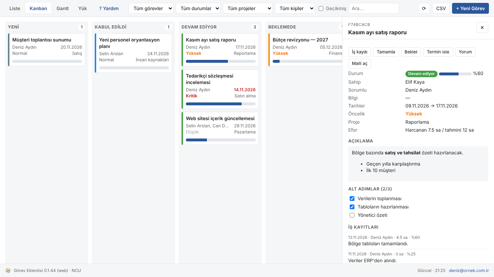

Görev Eklentisi: indirme, kurulum ve özellikler
Bu sayfa eklentinin nasıl indirilip kurulduğunu ve temel özelliklerini ekran görüntüleriyle anlatır. Görüntülerdeki kişi, adres ve görevler örnektir. Ayrıntılı anlatım için kullanım kılavuzuna bakılır.
Eklenti ne yapar?
Görev Eklentisi, Outlook'tan e-posta gönderir gibi görev vermeyi ve verilen ya da alınan görevleri tek pencereden izlemeyi sağlar. Görevler e-posta ile taşınır; ayrı bir sunucu ya da hesap gerekmez.
- Görev veren görevi açar, gelişmeleri izler ve tamamlanan görevi kapatır.
- Sorumlu görevi kabul eder (ya da gerekçeyle reddeder), yaptıklarını iş kaydı olarak girer ve görevi tamamlar.
- Bilgi olarak eklenenler görevi ve gelişmeleri görür, işlem yapmaz.
Her işlem karşı tarafa kendiliğinden bir güncelleme e-postası gönderir; görev iki tarafta da aynı durumda görünür.
İndirme
İndirme sayfası kullanılan bilgisayara uygun seçeneği işaretler. Üç seçenek vardır:
| Kullanılan Outlook | İndirilecek | Desteklenen hesaplar |
|---|---|---|
| Windows'ta klasik Outlook (üst menüde Dosya sekmesi vardır) | GorevEklentisi-Kurulum.exe | Tümü: Exchange, Microsoft 365, IMAP, POP, Gmail |
| Mac için Outlook, Windows'ta yeni Outlook, Outlook web | Eklenti dosyası (manifest) | Microsoft 365 ve Outlook.com |
| Outlook kurulu değil (Linux, ChromeOS) | Tarayıcı sürümü (kurulum gerekmez) | Microsoft 365 ve Outlook.com |
Farklı sürümleri kullananlar birbirine görev verebilir. Görev alan kişide eklenti yoksa görev normal bir e-posta olarak okunur.
Kurulum (Windows)
- İndirilen
GorevEklentisi-Kurulum.exeçift tıklanır. - "Windows kişisel bilgisayarınızı korudu" uyarısı çıkarsa Ek bilgi → Yine de çalıştır (nedeni aşağıda), yönetici onayında Evet seçilir.
- Kurulum, gereken bileşenleri (.NET Framework 4.8, Office çalışma zamanı, WebView2) eksikse kendisi kurar. Outlook açıksa kapatılır; kaydedilmemiş taslaklar önce kaydedilmelidir.
- Kapat denince Outlook yeniden açılır ve Giriş sekmesinde Görev grubu görünür.
Mac, yeni Outlook ve Outlook web için adımlar ayrı kurulum sayfasındadır.
Kurulumda çıkan "Windows kişisel bilgisayarınızı korudu" uyarısı
Kurulum dosyası ilk çalıştırıldığında Windows aşağıdaki mavi pencereyi gösterebilir. Bu bir virüs ya da hata bildirimi değildir; kurulum dosyasında bir sorun olduğu anlamına gelmez.


GorevEklentisi-Kurulum.exe olduğu görülür ve Yine de çalıştır seçilir.Neden çıkar? Microsoft Defender SmartScreen, internetten indirilen ve henüz yeterince tanınmamış programları ilk çalıştırmada durdurur. Bir programın "tanınması" için ya yaygın olarak indirilmiş olması ya da Microsoft'un tanıdığı bir yayımcı sertifikasıyla imzalanmış olması gerekir. Görev Eklentisi yeni yayınlanan bir yazılımdır ve kurulum dosyası NCU'nun kendi sertifikasıyla imzalanmıştır; bu nedenle Windows dosyayı henüz tanımaz. Yayımcı satırında bilgisayara göre "NCU" ya da "Bilinmeyen yayımcı" yazabilir.
Ne yapılır? Dosya bu sitedeki indirme sayfasından alındıysa Ek bilgi → Yine de çalıştır ile devam edilir. Uyarı, indirilen her yeni kurulum dosyasının ilk çalıştırılışında çıkabilir. Kurum bilgisayarlarında bu seçenek kapatılmışsa kurulum bilgi işlem birimi tarafından MSI paketiyle yapılır.
Kalıcı çözüm: Eklentinin Microsoft'un eklenti mağazasında yayınlanması için hazırlıklar sürmektedir. Mağazada yayınlandığında eklenti Outlook'un içinden, dosya indirilmeden kurulabilecek ve bu uyarı görülmeyecektir.
Outlook'taki Görev grubu

- Yeni Görev görev gönderme formunu açar.
- Görevler tüm görevlerin izlendiği pencereyi açar.
- Kabul, İş Kaydı, Tamamla, Görevi Aç seçili görev e-postasına göre etkinleşir.
- Araçlar menüsünde hesap seçimi, Gelen Kutusu taraması, bekleyen postaların gönderilmesi, güncelleme denetimi ve eklentiyi kaldırma bulunur.
Görev gönderme

- Sorumlu(lar) e-posta adresi ya da adres defterindeki adla yazılır; birden çok kişi noktalı virgülle ayrılır.
- Birden çok sorumlu varsa görev her biri için ayrı ya da ortak tek görev olarak açılır.
- Efor takibi açılırsa iş kayıtlarında harcanan saat zorunlu olur ve tahmini saat girilir.
- Alt adımlar sorumlunun tek tek işaretleyeceği kontrol maddeleridir.
- Birden çok hesapta görev alanı açıksa Gönderen hesap listesinden görevin hangi adresten gideceği seçilir.
Gelen görevde yapılacaklar
Gelen görev e-postası Gelen Kutusu'nun altındaki Görevler klasörüne taşınır ve bir bildirim çıkar. Görev, e-postadaki düğmelerle, şeritteki Görev grubuyla ya da Görevler penceresinden işlenir:
- Kabul ya da gerekçe yazılarak Reddet.
- Çalışıldıkça İş Kaydı: not, ilerleme yüzdesi ve (efor takibi açıksa) harcanan saat.
- Alt adımlar bittikçe işaretlenir; gerekirse Beklet, Termin iste ya da Yorum kullanılır.
- İş bitince Tamamla. Görev veren görevi Kapat ile sonlandırır ya da geri açar.
Görevler penceresi: liste ve ayrıntı

- Üstteki süzgeçlerle görevler role (verdiklerim, üzerimdekiler, izlediklerim), duruma, projeye ve kişiye göre daraltılır; Gecikmiş kutusu yalnızca termini geçenleri gösterir.
- Sütun başlığına tıklanınca liste o sütuna göre sıralanır.
- Satıra tıklanınca ayrıntı paneli açılır; yapılabilecek işlemler panelin üstündeki düğmelerdir.
- CSV düğmesi görünen listeyi Excel'de açılabilecek dosya olarak dışa aktarır.
Kanban

Kart başka bir sütuna sürüklenince ilgili işlem (kabul, bekletme, tamamlama gibi) başlatılır. Yalnızca o görevde izin verilen geçişler yapılabilir.
Gantt

Ölçek gün, hafta ya da ay olarak seçilir; görevler projeye ya da sorumluya göre gruplanabilir. Kesikli kırmızı çizgi bugünü gösterir.
Diğer özellikler
- Yük görünümü: kişi başına açık, gecikmiş ve tamamlanan görev sayıları ile tahmini ve harcanan saatler.
- Birden çok e-posta hesabı: her hesabın görevleri ayrı tutulur; hangi hesaplarda görev alanı açılacağı Araçlar → Görev Hesapları ile seçilir.
- Hatırlatma ve bildirim: yeni görev, güncelleme ve yaklaşan terminler için bildirim çıkar; bildirim alanındaki simge Görevler penceresini açar.
- Outlook Görevleri ile eşleme: sorumlu olunan görevler Outlook'un kendi Görevler listesinde ve Yapılacaklar çubuğunda da görünür.
- Ekler: görev gönderilirken dosya eklenebilir.
Güncelleme ve kaldırma
Eklenti yeni sürümü günde bir kez denetler; yayınlandığında Görev grubunda Yeni sürüm düğmesi belirir ve kurulum dosyasını indirir. İndirilen dosya çalıştırılınca eski sürümün üzerine kurulur; görevler ve tercihler korunur.
Kaldırmak için Araçlar → Eklentiyi Kaldır ya da Windows'un Ayarlar → Uygulamalar listesi kullanılır. Görev e-postaları posta kutusunda kalır.
Güncel sürüm 0.1.50 · 25.11.2026 07:53 (Türkiye saati)